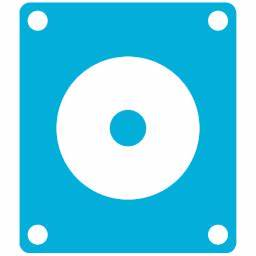
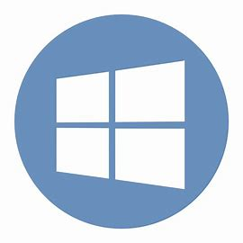
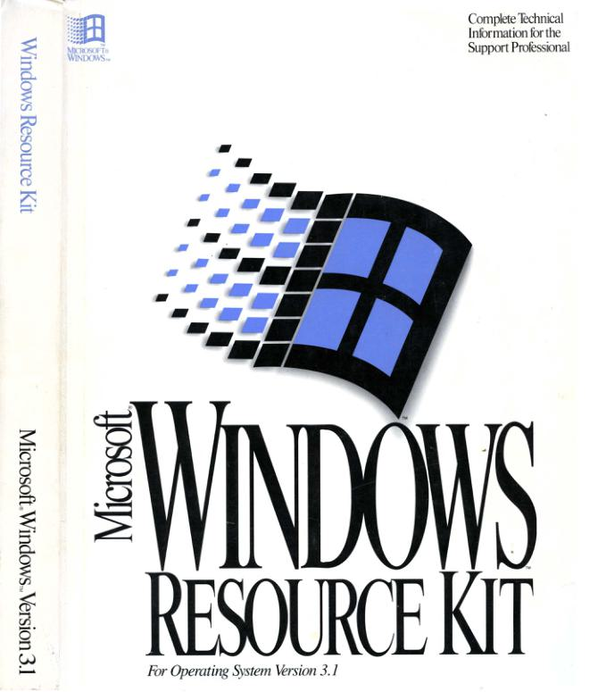

装机工具
PECMD
PECMD，即WinPE Commander，是一款专为Windows预安装环境（WinPE）设计的命令行工具。它主要用于在WinPE环境下执行各种任务，如文件管理、系统维护和批量处理等。PECMD提供了一套强大的命令和工具，帮助用户在有限的环境中执行复杂任务，具有强大的扩展性和灵活性。

Wepe
WePE，即微PE工具箱，是一款专注于PC维护的软件，旨在提供简洁、实用的维护体验。其命名灵感来源于微信（WeChat），寓意纯粹与实用。WePE继承了原通用PE工具箱的优秀基因，并进行了多项改进，包括一键安装、自动安装至U盘和开机启动项等功能，成为业界首创。

Firpe
FirPE是一款专为Windows操作系统设计的系统预安装环境（PE）工具，以其简约、易操作和人性化的特点著称。它基于最新的Windows PE环境构建，确保与多种硬件设备的兼容性。FirPE采用U盘作为使用载体，提供充足的存储空间，便于携带和使用。
Diskgenius
DiskGenius是一款功能全面且功能强大的磁盘管理与数据恢复软件，适用于Windows平台。它由DiskGenius团队开发，旨在帮助用户进行硬盘分区管理、数据恢复、备份还原以及硬盘克隆等操作。
Dism++
Dism++的主要功能包括系统清理、优化、备份、更新和恢复等。它能够帮助用户清理系统垃圾文件、无用文件和更新备份文件，释放磁盘空间，提高系统运行速度。此外，Dism++还支持管理驱动程序、功能、Appx包、服务以及Compact/WIMboot等高级功能。

WinNTSetup
WinNTSetup是一款功能强大的Windows系统安装和自定义工具，专为高级用户和管理员设计。它允许用户在安装操作系统之前创建定制的Windows安装镜像，从而实现个性化的系统配置和批量部署。